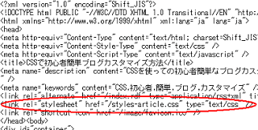
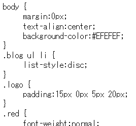
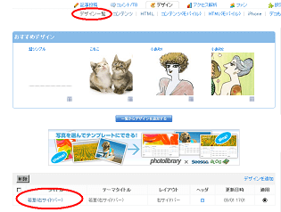
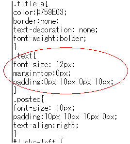
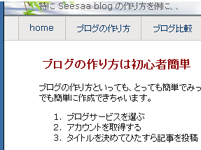
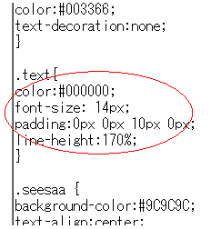
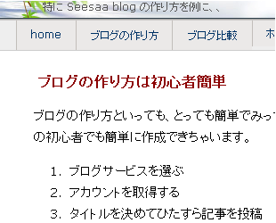

CSSで初心者簡単ブログカスタマイズ方法
ブログのデザイン的な見栄えの部分をカスタマイズするには、スタイルシート(CSS)で一括して変更します。
記事本文の行間や文字の大きさ、色彩などを変えることができます。
ライブドアやSeesaa、FC2など、利用しているブログサービスでスタイルシートの編集が可能であれば詳細に設定できます。
ブログの文字や色彩をCSSでカスタマイズする方法
CSSというのはスタイルシートのことで、「.css」の拡張子がついたファイルのことを指しています。
ブログのソースを表示してみると、たいていは head タグ内にある
<link rel="stylesheet" の箇所に、参照するスタイルシートの URL が表示されているはずです。
【例：このページの場合】

このURLにアクセスしてみると、実際のスタイルシートはこのようなファイルになっています。
【例：実際のスタイルシート】

ブログの文字の大きさや色彩、行間などを一括で変更するには、html 編集ではなくて、このCSSファイルを変更すると便利です。
文字の大きさを変えるには、このファイルの何pxとか書かれている部分を変更し、色彩を変えるには、#EFEFEF などの部分を書き換えればいいわけです。
カスタマイズ要素
- font-size:文字の大きさ;
- font-weight:文字の太さ;
- line-height:行間;
- color:文字の色彩;
- background-color:背景の色彩;
ブログ内の全てのページでこのCSSファイルが参照されている場合、このファイルを書き換えるだけで、一括で全ページのデザインを変更することができます。
シーサーブログでのCSSカスタマイズ方法
シーサーブログの場合、記事中のテキストの部分を変更するには、「デザイン - デザイン一覧」のスタイルシートの箇所で text の部分を書き換えて保存します。

デフォルトのスタイルシートの text の部分はこんな感じです。
◆ デフォルトのスタイルシート

textの部分は、記事のタイトルなどは含まず、純粋に記事の本文のみの箇所が該当します。
- text → 本文
- body → 画面全体
- container → ブログ全体
- banner → ヘッダー部分
- h1 → ブログタイトル
- links → 右サイドバー
この場合、font-size:12px;と書いているので、文字の大きさは12pxで表示されています。このデフォルトのスタイルシートのままで表示してみると、実際のブログはこんな感じです。

ただ、12pxだと多少文字が小さい気もしたので、この記事本文の箇所にあたるデフォルトのスタイルシートのtextの部分を、こんな感じでブログカスタマイズしちゃったんです。
◆ ブログカスタマイズ後のCSS

そうすると、実際のブログはこんな感じで表示されました。

デフォルトの文字の大きさですが、font-size を 12px から 14px にして大きくしてみたんです。
さらに、行間も多少空けた方がみやすいと思ったんで、line-height:170%; を付け足してみた次第です。
行間をさらにおおきく取りたい場合は、この % の値を 180% とかにして設定してみるといいかと思いますが、一般的には150%程度のサイトが多いです。
さらに、記事本文の色は、はっきりした濃い黒の方が見やすいと思ったんで、color:#000000; も付け足してます。
この #000000 の値はまっ黒っていうことですけど、薄めの黒がいいとおもったら、#333333 とか #555555 って感じで増やしていけばいいと思います。
ちなみに、パワースポイトなどの色彩を採取するツールを使うと、こんな色にしたいという色彩のコードを簡単に調べることができます。
記事本文の色彩や行間、文字の大きさを変化させるだけでも、かなり印象が違ってきます。
- font-size:文字の大きさ;
font-size:12px;
font-size:13px;
font-size:14px;
font-size:90%; - font-weight:文字の太さ;
font-weight:bold;
font-weight:normal; - line-height:行間;
line-height:150%; - color:文字の色彩;
color:#000000;
color:#333333; - background-color:背景の色彩;
background-color:#FFFFFF;
background-color:#EFEFEF;
この「:」や「;」が抜けてたりすると、場合によってはきちんと表示されなかったりもするようです。
padding はエントリー部分の余白を設定するときに使います。
padding:上 右 下 左;
左の箇所の余白をある程度とっておくと、見やすくなるかもしれません。
◆ Seesaaでのカスタマイズの例
.text {
font-size:13px;
line-height:150%;
color:#111111;
padding:5px 10px 0px 10px;
background-color:#FFFFFF;
}
.text {
font-size:14px;
padding:5px 10px 0px 10px;
font-weight:bold;
line-height:150%;
color:#000000;
background-color:#FFFFFF;
}
ちなみに、FC2 ブログの場合は、おそらくテンプレートによって違うとは思いますが、だいたいは entry_text、もしくは entry_body の箇所が記事本文の箇所にあたるかと思います。
CSSスタイルシートを直接編集できるブログサービスはシーサーブログや FC2、ジュゲムや blogger（外部CSSではない） などがありますが、それほど多くはないです。
- 横幅widthをpxから%で相対指定のCSS
アクセス解析を見てみると、画面の解像度を 1024x768 で設定している人が多いようなので、ブログの横幅 px を解像度 1024x768 に合わせた長さに設定した方がいいのかなって思うんです。たぶ... - 見やすいブログやサイトのフォント
ブログのスタイルシートでフォントを指定すると意図したフォント順で表示されるようになりますが、見やすいサイトやブログではどのようなフォントを使用しているのでしょうか。前の記事でおしゃれフォントの記事を書...